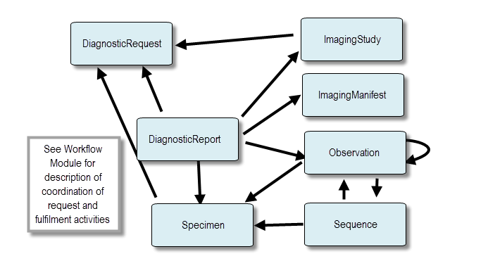

Current Build

 Diagnostics
DiagnosticsThe Diagnostics Module provides an overview and guide to the FHIR content that addresses ordering and reporting of clinical diagnostics including laboratory testing, imaging and genomics.
The Diagnostics module covers the following resources:
The diagnostic resources and their relationships are shown below. The Arrows represent the direction of the references between resources. For example, DiagnosticReport references DiagnosticRequest.
Also, see the Genomics Implementation Guidance for additional information about how to use the Diagnostic resources for Clinical Genomic Reporting and Analysis.
The diagnostic resources often represent patient-related data, and as such are susceptible to data breaching. Necessary privacy and security provision must be in place for searching and fetching this information. For more general considerations, see the Security and Privacy module.
Diagnostic resources are commonly used as to order and report clinical diagnostics:
Observation and Diagnostic Report resources have been tested and used in production tooling and as such have reached a maturity level (FMM) where changes become less likely.ImagingStudy resource has had some limited testing and use. Further use of this resource in production tooling in order for it to reach a more stable FMM level.These other diagnostic resources are still under development:
DiagnosticRequest: used in the HL7 production tooling and in several implementation guides. As a result of the addition of FHIR workflow for STU3, the DiagnosticRequest resources has undergone substantial changes since DSTU2. It has been renamed from DiagnosticOrder and its structure and content updated to align with a general "request" pattern. Because of this, it remains an immature resource.Specimen: We expect to see more widespread use of this resource and future updates to its FMM levelImagingManifest: We expect to see more widespread use of this resource and future updates to its FMM levelSequence: This resource remains draft and we expect to see more widespread use of this resource and future updates to its FMM levelBodySite: This resource remains draft and its whether it remains a FHIR core resource is still uncertain. It can only be referenced using extensions.Editor : Eric Haas
© HL7.org 2011+. FHIR STU3 Candidate (v1.7.0-10082) generated on Thu, Oct 27, 2016 16:28+0000. QA Page
Links: Search  |
Version History |
Table of Contents |
Compare to DSTU2 |
|
Version History |
Table of Contents |
Compare to DSTU2 |
 |
Propose a change
|
Propose a change